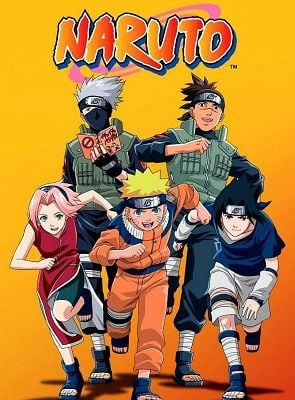

Naruto
2002
A série gira em torno das aventuras vividas por Naruto Uzumaki, um jovem órfão habitante da Aldeia da Folha que sonha em se tornar o quinto Hokage,
o maior guerreiro e governante da vila. Ao se graduar como ninja, Naruto descobre que tem um demônio raposa selado dentro de si.
Episódios: 210
Filmes: 3
OVAS: 3
Resenhas
Nome: Naruto
Ano: 2002
Nota: ⭐⭐⭐⭐⭐
Anime ótimo, com boas lutas, história emocionante, bons personagens e uma jornada épica